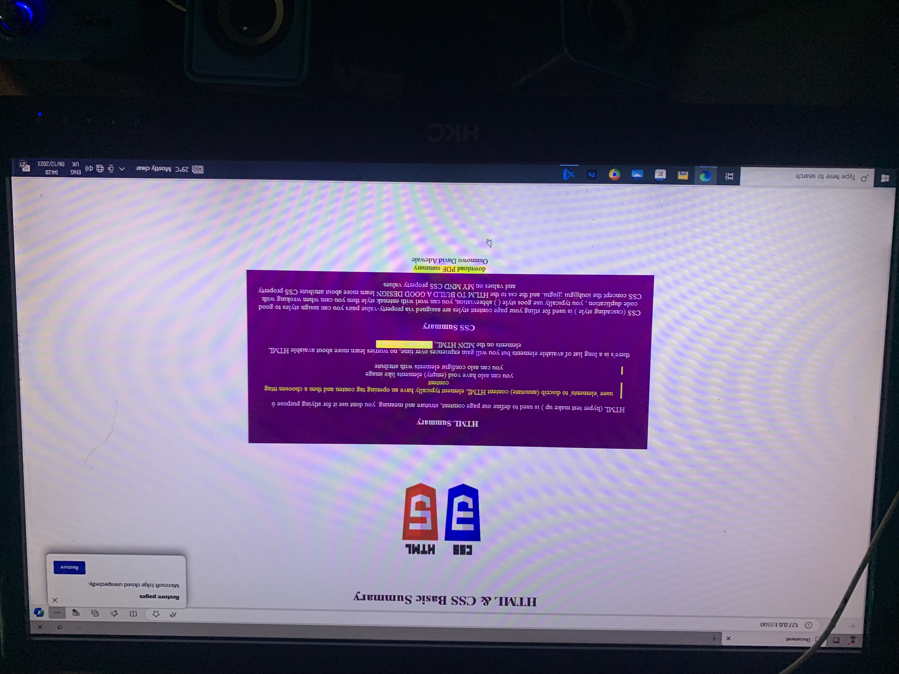

I have had interest in Tech since my collage year but I did not have the opportunity to study computer science for my degree but while I was in university I had a friend who was already into Tech. He assisted me in leaning HTML , that is my first programming language but due to the pressure and challenges in school I could not learn much from him then I developed self-learning , I started watching video tutorials and made researches
I have been able to develop three different web sites of my own and I have worked as a freelance and acquired more experiences in IT.
